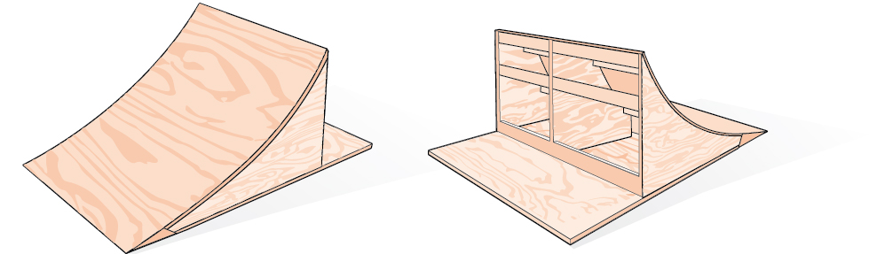
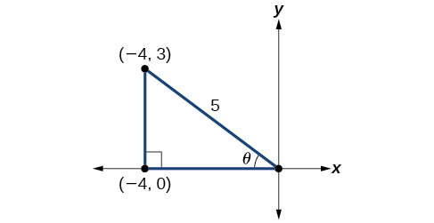

Double-Angle, Half-Angle, and Reduction Formulas

Bicycle ramps made for competition (see Figure 1) must vary in height depending on the skill level of the competitors. For advanced competitors, the angle formed by the ramp and the ground should be such that The angle is divided in half for novices. What is the steepness of the ramp for novices? In this section, we will investigate three additional categories of identities that we can use to answer questions such as this one.
Using Double-Angle Formulas to Find Exact Values
In the previous section, we used addition and subtraction formulas for trigonometric functions. Now, we take another look at those same formulas. The double-angle formulas are a special case of the sum formulas, where Deriving the double-angle formula for sine begins with the sum formula,
If we let then we have
Deriving the double-angle for cosine gives us three options. First, starting from the sum formula, and letting we have
Using the Pythagorean properties, we can expand this double-angle formula for cosine and get two more interpretations. The first one is:
The second interpretation is:
Similarly, to derive the double-angle formula for tangent, replacing in the sum formula gives
Using a Double-Angle Formula to Find the Exact Value Involving Tangent
Given that and is in quadrant II, find the following:
- ⓐ
- ⓑ
- ⓒ
Solution
If we draw a triangle to reflect the information given, we can find the values needed to solve the problems on the image. We are given such that is in quadrant II. The tangent of an angle is equal to the opposite side over the adjacent side, and because is in the second quadrant, the adjacent side is on the x-axis and is negative. Use the Pythagorean Theorem to find the length of the hypotenuse:
Now we can draw a triangle similar to the one shown in Figure 2.

- ⓐLet’s begin by writing the double-angle formula for sine.
We see that we to need to find and Based on Figure 2, we see that the hypotenuse equals 5, so and Substitute these values into the equation, and simplify.
Thus,
- ⓑ Write the double-angle formula for cosine.
Again, substitute the values of the sine and cosine into the equation, and simplify.
- ⓒ Write the double-angle formula for tangent.
In this formula, we need the tangent, which we were given as Substitute this value into the equation, and simplify.
Using the Double-Angle Formula for Cosine without Exact Values
Use the double-angle formula for cosine to write in terms of
Solution
Using Double-Angle Formulas to Verify Identities
Establishing identities using the double-angle formulas is performed using the same steps we used to derive the sum and difference formulas. Choose the more complicated side of the equation and rewrite it until it matches the other side.
Using the Double-Angle Formulas to Establish an Identity
Establish the following identity using double-angle formulas:
Solution
We will work on the right side of the equal sign and rewrite the expression until it matches the left side.
Analysis
This process is not complicated, as long as we recall the perfect square formula from algebra:
where and Part of being successful in mathematics is the ability to recognize patterns. While the terms or symbols may change, the algebra remains consistent.
Verifying a Double-Angle Identity for Tangent
Verify the identity:
Solution
In this case, we will work with the left side of the equation and simplify or rewrite until it equals the right side of the equation.
Analysis
Here is a case where the more complicated side of the initial equation appeared on the right, but we chose to work the left side. However, if we had chosen the left side to rewrite, we would have been working backwards to arrive at the equivalency. For example, suppose that we wanted to show
Let’s work on the right side.
When using the identities to simplify a trigonometric expression or solve a trigonometric equation, there are usually several paths to a desired result. There is no set rule as to what side should be manipulated. However, we should begin with the guidelines set forth earlier.
Use Reduction Formulas to Simplify an Expression
The double-angle formulas can be used to derive the reduction formulas, which are formulas we can use to reduce the power of a given expression involving even powers of sine or cosine. They allow us to rewrite the even powers of sine or cosine in terms of the first power of cosine. These formulas are especially important in higher-level math courses, calculus in particular. Also called the power-reducing formulas, three identities are included and are easily derived from the double-angle formulas.
We can use two of the three double-angle formulas for cosine to derive the reduction formulas for sine and cosine. Let’s begin with Solve for
Next, we use the formula Solve for
The last reduction formula is derived by writing tangent in terms of sine and cosine:
Writing an Equivalent Expression Not Containing Powers Greater Than 1
Write an equivalent expression for that does not involve any powers of sine or cosine greater than 1.
Solution
We will apply the reduction formula for cosine twice.
Analysis
The solution is found by using the reduction formula twice, as noted, and the perfect square formula from algebra.
Using the Power-Reducing Formulas to Prove an Identity
Use the power-reducing formulas to prove
Solution
We will work on simplifying the left side of the equation:
Analysis
Note that in this example, we substituted
for The formula states
We let so
Using Half-Angle Formulas to Find Exact Values
The next set of identities is the set of half-angle formulas, which can be derived from the reduction formulas and we can use when we have an angle that is half the size of a special angle. If we replace with the half-angle formula for sine is found by simplifying the equation and solving for Note that the half-angle formulas are preceded by a sign. This does not mean that both the positive and negative expressions are valid. Rather, it depends on the quadrant in which terminates.
The half-angle formula for sine is derived as follows:
To derive the half-angle formula for cosine, we have
For the tangent identity, we have
Using a Half-Angle Formula to Find the Exact Value of a Sine Function
Find using a half-angle formula.
Solution
Since we use the half-angle formula for sine:
Analysis
Notice that we used only the positive root because is positive.
Finding Exact Values Using Half-Angle Identities
Given that and lies in quadrant III, find the exact value of the following:
- ⓐ
- ⓑ
- ⓒ
Solution
Using the given information, we can draw the triangle shown in Figure 3. Using the Pythagorean Theorem, we find the hypotenuse to be 17. Therefore, we can calculate and

- ⓐBefore we start, we must remember that, if is in quadrant III, then so This means that the terminal side of is in quadrant II, since
To find we begin by writing the half-angle formula for sine. Then we substitute the value of the cosine we found from the triangle in Figure 3 and simplify.
We choose the positive value of because the angle terminates in quadrant II and sine is positive in quadrant II.
- ⓑ To find we will write the half-angle formula for cosine, substitute the value of the cosine we found from the triangle in Figure 3, and simplify.
We choose the negative value of because the angle is in quadrant II because cosine is negative in quadrant II.
- ⓒ To find we write the half-angle formula for tangent. Again, we substitute the value of the cosine we found from the triangle in Figure 3 and simplify.
We choose the negative value of because lies in quadrant II, and tangent is negative in quadrant II.
Finding the Measurement of a Half Angle
Now, we will return to the problem posed at the beginning of the section. A bicycle ramp is constructed for high-level competition with an angle of formed by the ramp and the ground. Another ramp is to be constructed half as steep for novice competition. If for higher-level competition, what is the measurement of the angle for novice competition?
Solution
Since the angle for novice competition measures half the steepness of the angle for the high-level competition, and for high-competition, we can find from the right triangle and the Pythagorean theorem so that we can use the half-angle identities. See Figure 4.

We see that We can use the half-angle formula for tangent: Since is in the first quadrant, so is Thus,
We can take the inverse tangent to find the angle: So the angle of the ramp for novice competition is
Key Equations
| Double-angle formulas | |
| Reduction formulas | |
| Half-angle formulas |
Key Concepts
- Double-angle identities are derived from the sum formulas of the fundamental trigonometric functions: sine, cosine, and tangent. See Example 1, Example 2, Example 3, and Example 4.
- Reduction formulas are especially useful in calculus, as they allow us to reduce the power of the trigonometric term. See Example 5 and Example 6.
- Half-angle formulas allow us to find the value of trigonometric functions involving half-angles, whether the original angle is known or not. See Example 7, Example 8, and Example 9.
Section Exercises
Verbal
Explain how to determine the reduction identities from the double-angle identity
Solution
Use the Pythagorean identities and isolate the squared term.
Explain how to determine the double-angle formula for using the double-angle formulas for and
We can determine the half-angle formula for by dividing the formula for by Explain how to determine two formulas for that do not involve any square roots.
Solution
multiplying the top and bottom by and respectively.
For the half-angle formula given in the previous exercise for explain why dividing by 0 is not a concern. (Hint: examine the values of necessary for the denominator to be 0.)
Algebraic
For the following exercises, find the exact values of a) b) and c) without solving for
If and is in quadrant I.
Solution
a) b) c)
If and is in quadrant I.
If and is in quadrant III.
Solution
a) b) c)
If and is in quadrant IV.
For the following exercises, find the values of the six trigonometric functions if the conditions provided hold.
and
Solution
and
For the following exercises, simplify to one trigonometric expression.
Solution
For the following exercises, find the exact value using half-angle formulas.
Solution
Solution
Solution
Solution
For the following exercises, find the exact values of a) b) and c) without solving for when
If and is in quadrant IV.
If and is in quadrant III.
Solution
a) b) c)
If and is in quadrant II.
If and is in quadrant II.
Solution
a) b) c)
For the following exercises, use Figure 5 to find the requested half and double angles.

Find and
Find and
Solution
Find and
Find and
Solution
For the following exercises, simplify each expression. Do not evaluate.
Solution
Solution
Solution
For the following exercises, prove the identity given.
Solution
Solution
For the following exercises, rewrite the expression with an exponent no higher than 1.
Solution
Solution
Solution
Technology
For the following exercises, reduce the equations to powers of one, and then check the answer graphically.
Solution
Solution
Solution
Solution
For the following exercises, algebraically find an equivalent function, only in terms of and/or and then check the answer by graphing both equations.
Solution
Extensions
For the following exercises, prove the identities.
Solution
Solution
Solution
Solution
Solution
Analysis
This example illustrates that we can use the double-angle formula without having exact values. It emphasizes that the pattern is what we need to remember and that identities are true for all values in the domain of the trigonometric function.